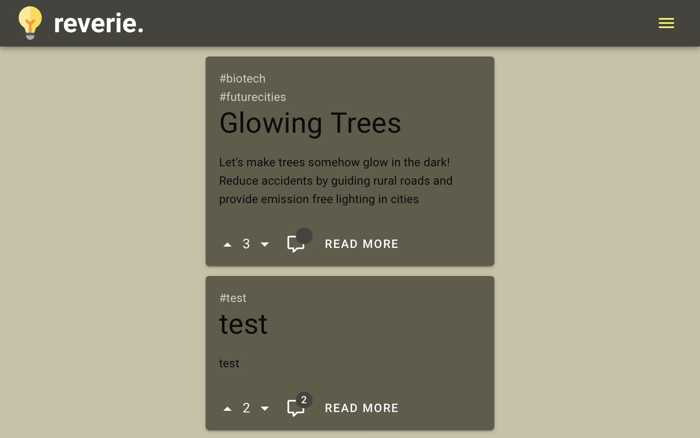

(project) reverie - overview and first prototype

The Idea
While scrolling through the internet I realized the best way to spread the random ideas you get whilst showering and thinking about life is to post them to the r/lightbulb subreddit.
There are no websites online providing a platform to discuss, develop and share ideas despite the fact that ideas are the only way mankind develops further.
So for me, looking for the next side-project-idea, this is a perfect start.
The idea of ideas:
Providing a platform for users to exchange, develop and bring ideas to life together.
While thinking about this concept I developed some messy ideas on how to build this platform:
- Use hashtags to put ideas into categories and make it possible for users to follow a specific feed depending on their interests/skills etc.
- make it possible for businesses to get ideas from their customers on developing their product/service
- develop ideas in a tree-structure
- a swiping-voting-mode similar to the app Tinder
- give users a private ideas sketchbook
- subscribe to ideas and get notified on an idea development
- build work groups with private chat rooms on ideas to develop them similar to Github
- select an idea of the month and offer them sponsoring of businesses
- ...

First Prototype:
I decided to develop a simple first prototype by myself to get some first feedback from real users.
It should be possible for users to post their ideas with hashtags and vote for those ideas.
Another reason why I wanted to build this running prototype is to have something to show people and
to attract their attention so that they may even participate. the attention of people who want to participate.
Building the fontend was not very difficult. I have gained experience with Vue.js and Node.js/Express in last project.
Programming the backend was more challenging. The backends I have written before I started this project were much more rudimentary. No login, authentication, database etc...
But with many try-and-error-cycles I have somehow managed to build this site. It is currently running on an AWS EC2 server (only for testing).
Next Steps:
- implementing hashtag sub-feeds
- admin and moderator board
- designing a frontpage
- writing tests
- security fixes
- legal information
- and much more ...
If you are interested in participating in this project, or would like me to send you a link feel free to DM me.
Currently I see it as a side-project to gain some programming experience and if it turns out that there is a demand for a platform like this I could also imagine building a startup around this mother of ideas.